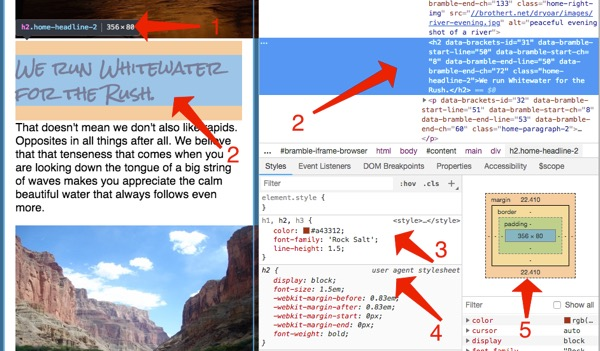
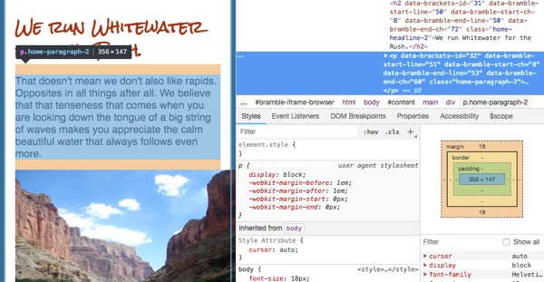

Nothing makes a webpage feel like more of a product and less of a
project than changing from the default fonts. You should have chosen
one or two fonts when you were putting the site plan together for
your site. Go review that now.
If you chose fonts from among the
web-safe list then you can use them just like Khan academy showed you this
week. (Here is another list of the web-safe fonts:
http://www.cssfontstack.com/)
If you chose fonts from Google Fonts or elsewhere then we have to
make the font available to the web page first before we can use
them.
No matter which fonts you are using it is always a good idea to list
some fall-back fonts, in case for some reason your first choice
doesn't work correctly...you can control how it degrades. Your
second choice should be similar to your first (and usually
web-safe), the third font in the list should usually be one of the
default font families. (serif, san-serif, fantasy, monospace, or
script)
So for example if I chose Helvetica as my font for body copy I
would add something like
font-family: Helvetica, Arial, sans-serif; to a rule
modifying the body of my page.
If, however, I wanted to use the font Rock Salt for my headlines,
that is not a web safe font and will probably not be on most
computers. I have to do an extra step to make it available.
Google Fonts makes it very easy to add your fonts. Find your font in
Google Fonts and click it:
Then click on the 'Select this style' to expand it.
Then click on the 'Embed' tab and the '@import' tab.
Copy the line that starts with '@import' and add it to the
top of your style.css file. It should
look something like this:
@import url(https://fonts.googleapis.com/css?family=Rock+Salt);
...the rest of your css...
Now you can use that font just like normal, ie:
font-family: 'Rock Salt', cursive;
Change your Body font
Based on your font choices from your site plan, add the
appropriate font-family:, and
@import lines to your CSS to change the body font
and headline font on your webpage.
Adjusting font size
Often the default font sizes are fine...but there are times when
they need to be changed. For example it's good for the links used
for navigation to be nice and easy to click, so lets increase
their size. Let's make it 110% of normal. (Remember the 'em' unit
of measurement for fonts. 1em = the normal size of your font...so
1.1em = 110%)
Nice to have those fonts in there :) Now notice what is
happening anywhere that you have made colored boxes around
anything. Here is an example:
The font and image are pressed right up against the edge of the
border and it looks...not great. Lets fix it.
The space between the content in a box and the edge of a box is
called
padding. We can add padding to one or all sides. For example, if I
wanted to add some padding to all 4 sides of the box I would do
something like this: padding: 1em; (We
will learn more about padding next week)
Understanding the Box Model
Take a break from your HTML and CSS to read this article
Opening the Box Model
down to the "In Practice" section. Then come back and continue.
Adding Padding
Use padding to space out the content on your page from
any edges or borders where it is needed.
Paying attention to promixity
Proximity is a design principle that we rely on to help to know
which elements on our page are related to each other by their
distance from each other. Right now the headlines are the exact
same distance from the images as they are from the paragraphs.
This can cause confusion in visitor's minds. Do the headlines
describe the images or the text? It's hard to know currently.
Let's make sure that visitors to our site know that the headlines
and paragraphs are related to each other by bringing them a little
closer together. Adjust the line-height and
margins of your headlines to bring them closer to the
paragraphs they belong to. You could even play with the
line-height of your paragraphs to see how it affects readability
as well.
When you are done the headlines should be closer to the paragraphs
than they are to the images.
Why isn't it working?
Using line-height and margin on the
headline were you able to get the headline closer to the paragraph
than it is to the image? You probably didn't, so what is going on?
The screenshots for this next section are from the Chrome browser.
It may help if you switch to that browser for this section if you
are not already using it. Make sure that you have also completed
the
Web development tools
section on Khan Academy before proceeding.
Browser developer tools
If you are having a hard time getting your headlines to come
closer to your paragraphs try this: right click on one of your
headlines and select "Inspect". An area on your browser should
open at either the side or bottom of the screen that shows both
the html and the styles for that element. This is a powerful tool.
When I did this I saw the following:

Notice that browser is showing me the size of the element in
pixels.
It's also showing me where the element I have inspected is both
in the code (right) and in the browser window (left). On the
left it shows the area it takes up both for size (blue
highlight) and margins (brown highlight). If there were any
padding it would be green. If you look at the code you will
probably see a bunch of stuff in the html that you don't
remember adding to your page! Glitch added that to help it do
what it needs to do. You can ignore everything prefixed with
'data-'
All the styles are shown. The third arrow shows styles I
defined.
This arrow shows several styles I
did not define. Notice it says "user agent
stylesheet" That's just another way of saying "browser default
styling".
Finally we get a graphical representation of the
CSS Box Model
The highlighted area, styles, and the box model are all showing in
different ways that an <h2> has top and bottom
margins defined by default. Those defaults are probably
interfering with your desire to move the headline closer to the
paragraph.
More Inspecting
Now select the paragraph element below the title we are working
with. Right-click on the paragraph and select "Inspect" again.
This will target that element in the DOM inspector. (Or just click
on the paragraph element in the HTML Element pane)

A paragraph element in the developer tools
What do you see? If you noticed that this paragraph (in fact ALL
paragraphs) also have some default top and bottom margin great
job! :)
When two elements by each other both have top and bottom margins,
the browser collapses the smaller margin and keeps the larger. So
before we changed anything the bottom margin of the
<h2> was about 22px (see first inspect figure
above), and the <p> had a top margin of 18px.
The space between the elements would be 22px. If we changed the
bottom margin of the <h2> to 0 then the space
between the two elements would still be 18px...because of the
<p> default styles. To get the two elements to
move closer together then, we need to address both margins!
We have two choices here: we could set a rule for both the
headlines AND the paragraphs and adjust margins on both, or we can
take advantage of the fact that margins can be NEGATIVE.
A positive margin pushes two elements apart, a negative one pulls
them closer together.
In your browser tools try adding a negative
margin-bottom to the <h2> we are
trying to style. Once you find a value that looks good, add a rule
to your style.css to fix all your headlines that have
paragraphs following them.
Check your site
Preview your site to make sure the web page displays correctly.
Pay special attention to whether your images are all displaying.
Once verified, submit the URL for your page to iLearn.
Make sure to validate your
html
and
CSS, fix any errors, then submit the URL to your site in ILearn.
Grading
This activity will be graded using the following rubric:
Linked site shows examples of using font-family, font-size,
line-height, and padding with classes or ids (6 pts)
Fonts of the webpage are changed from the default browser font and
a series of 3 fonts have been indicated in the CSS to control how
the font degrades if a desired font is not available. (3pts)
The HTML and CSS is well formed and without errors (valid). (1 pt)